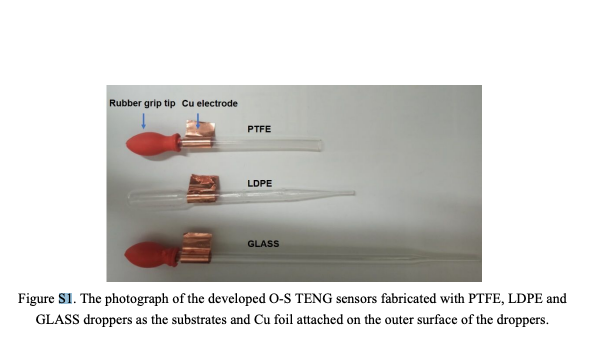

for converting randomly distributed, irregular, and wasted low-frequency energy into electric power.
Maxwell’s displacement current
8.02x - Module 07.01 - Discplacement Current.
Maxwell's Equations
Machine?
Methodology?
Material specalistaion?
Coating?
Machine Used
- Keithley 6517 system electrometer
- linear motor from Wang’s group (LinMot, E1100, America) was used to drive the system to move periodically with an amplitude of 100 mm and cycle of 2.4 s
- micromorphology of this wear debris was taken by a scanning electron microscope (Quanta 200 FEG, FEI, America)
- Oxygen-containing functional groups of aged oils were investigated by a Fourier-transform infrared spectroscopy (Vertex, NETZSCH, Germany)
- (TAN) were obtained by a TAN tester (Delit, China)
- A QCM-D instrument (Q-sense E4 system, Biolin Scientific, Sweden) was used to simultaneously measure the changes of both resonance frequency (Δf) and dissipation (ΔD) for the adsorption of oil components on a normative Au substrate.
- the dielectric constant of lubricating oil was measured by an automatic oil dielectric loss and volume resistivity tester (Delit, China
Fabrication of O−S TENG.
- manual dropper-based(15 mm and 263.8 mm2. The inner diameters of all droppers are 5 mm)
- single electrode-based
80 μm thick PTFE film

Questions to be answered.
What exactly is the objective????
1. coating oil-phobic as well as pH-responsive
2. Find the pH of the oil. monitoring
3. Testing coating (V).
with correlation to voltage
Surface clean and (hydrophobic
Make a surface
Amount ?
pH?Hydrophobic
>Can it be electrostatic as well as hydrophobic?
>Flow rate(mim. time for electron transfer) and sample space(role of statistics)?
>how effective is step response(correlation factors)?
>Dielectric constant?
>Is it worth it because its too specific,Oil- TENG couple?
>How similar to capacitive sensing? Noise?
.17g Sio2
3 g Fc
5g water acetone
Hydrogel Microcapsules with Dynamic pH-Responsive Properties from Methacrylic Anhydride
- hydrophobic poly(methacrylic anhydride) shells using microfluidic double emulsion drop templating and UV photopolymerization.

- The hydrophobic poly(methacrylic anhydride) shell undergoes hydrolysis, especially under various pH conditions. During this hydrolysis process, the anhydride units of the polymerized microcapsule shell are cleaved, yielding tethered carboxylic acid groups
- The cleaved carboxylic acid groups introduced by hydrolysis are pH-sensitive. When exposed to different pH levels:
- At lower pH (acidic conditions), the carboxylic acid groups remain protonated, making the hydrogel relatively hydrophobic.
- At higher pH (alkaline conditions), the carboxylic acid groups deprotonate, becoming carboxylate anions. This imparts a negative charge to the polymer network, leading to electrostatic repulsion between the negatively charged groups. This repulsion causes the hydrogel to swell, increasing its hydrophilicity and water content.
- pH-responsive swelling and deswelling behavior, the permeability of the microcapsule shell changes
An underwater pH-responsive superoleophobic surface with reversibly switchable oil-adhesion
- oil-adhesion based on nanostructured poly(acrylic acid) (PAA) by changing the environmental pH values

- polymer poly(acrylic acid) (PAA) on Glass
- grafting >plasma polymerization process
Considerations
Sensitivity,Durability, Calibration.
Gloves, mask, goniometer training